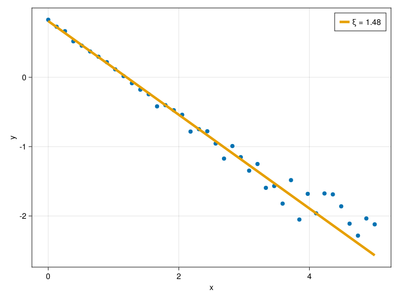

Linear Regression with Noise Data
The localization length comes from noise data, and one needs to pre process the data before extracting any analysis. In this section, we show how we use the package LinRegOutliers.jl for our application.
Localization length, $\xi$, comes from the assumption that the data follows
\[y = A_0e^{-x/\xi}.\]
However, the package LinRegOutliers.jl works best with linear functions, thus, we define
\[Y = ln(A_0) -x/\xi\]
or
\[Y = A + Bx\]
Our goal then becomes to identify $\xi = -1/B$.
Exponential with Noise
We will create some data and check for the methods avaiable on LinRegOutliers.jl that leads to best results. Our test function will be
\[y = 2.234e^{-x/1.345}\]
and we add white noise at each point of the domain $x$
using Random
Random.seed!(1234)
x = range(0, 5, length = 40)
y = log.(2.234exp.(-x/1.345) .+ rand(length(x)) ./ 10)Now, we will create a functin that returns the coeficientes of the linear fit. For that, we specify our @formula, the Dataframe with our data, and use one of the available methods on LinRegOutliers.jldocs.
using LinRegOutliers, DataFrames
function linear_fit_robust(x, y; regression_method = lta)
reg = createRegressionSetting(@formula(y ~ x), DataFrame([:x => x, :y => y]))
result = regression_method(reg)
A, B = result["betas"]
y_fit = A .+ (B .* x)
return A, B, y_fit
end
## test
A, B, y_fit = linear_fit_robust(x, y)
ξ = -1/BNow, we can test and visualize the fitting result
using CairoMakie
scatter(x, y, axis=(xlabel="x", ylabel="y"))
lines!(x, y_fit, color = Cycled(2), linewidth = 5, label="ξ = $( round(ξ, digits=3))")
axislegend()
current_figure()
Methods Comparison
The exact metho depends on the level of noise on the data. On this specific example, the best regression method was the asm2000.
begin
fig = Figure()
ax = Axis(fig[1, 1], xlabel = "x", ylabel="y")
scatter!(ax, x, y)
methods_list = [hs93, ks89, smr98, lms, lts, bch, py95, satman2013, satman2015,
asm2000, lad, lta, galts, imon2005, ccf, cm97, quantileregression]
comparisons = []
for method in methods_list
a, b, y_fit = linear_fit_robust(x, y; regression_method = method)
lines!(ax, x, y_fit, linewidth = 1, label = "$(method)")
comparison = (-1/b)/1.345
push!(comparisons, comparison)
end
value, idx = findmin(comparisons)
println("$(methods_list[idx]) had the best fitting, with ξ = $(value*1.345)")
Legend(fig[1, 2], ax)
current_figure()
end